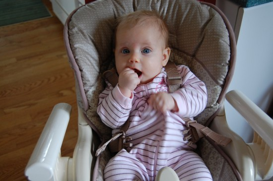
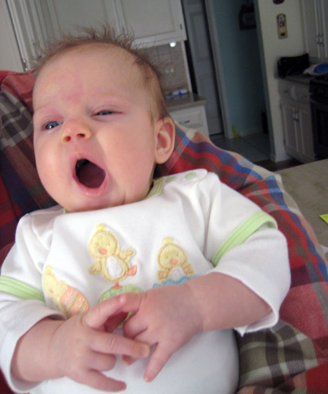

April 28, 2009 at 8:33 pm
· Filed under Rants

Greetings electronic weblog viewers! An unusually long amount of time has passed since I last updated you with the sordid details of my daily routines, so I’ll just get right to it.
For starters, I have grown up so fast! Now staring down the barrel of my fourth month, I’ve been outgrowing clothes, diapers, chairs, swings — you name it, I probably don’t fit in it. Along with my increased size, I gained other useful skills such as holding up my own head, focusing attention on people and objects, sitting upright, and grabbing stuff with specific intentions (as opposed to my previous “coincidental intentions.”)
I haven’t slowed down my teething/chewing routines in the least, but I’m trying to round out those activities to achieve a well-balanced gamut of entertainment. The Big People have me going to yoga, and some other sort of facility where they all say funny things in funny voices. I’ve also enjoyed my new suite of toys at home, especially the blinky piano/noisy ones.
By far the most fulfilling culmination of my nascent journey into person-hood was my first experience in a Big People-level chair at the kitchen table. Finally I am no longer relegated to the bouncy seat on the ground, which was fine for a while, but now makes me feel kind of inferior. Along with the really tall chair, I have been able to explore the outdoors a bit…Grass and trees are nice, but they are rather difficult to put in my mouth, so I’m not too interested right now.
Permalink
April 20, 2009 at 8:37 pm
· Filed under Rants
It’s official — I’ve turned over a new leaf! Underneath that leaf, I discovered a seemingly limitless sweetness, which has become my predominant disposition. These days, I’ll smile, play, act bashful, laugh at silly jokes (almost) and when all of that’s over, I’ll even take a decent (by comparison) nap. Some avid readers might find themselves befuddled by this news, but I can assure you that these Happy Days are not just a result of the Fonz Hair Goo I mentioned in my earlier posting. Although, heyy, it can’t hurt.
Consistency is the key, as I have been well entertained by a steady stream of Big People visitors and occasionally equal-sized people, which is exciting and hence makes me ever-so-sleepy. Also on the consistency front, I have been persuaded into maintaining a regimented schedule, despite my strong inner desire to protest this at any opportunity. Make no mistake, I intend to protest, but…yawn.
Not all of my stubbornness has subsided, though, as I am still adamant about keeping 1-5 fingers in my mouth during all waking hours, and preferably during most sleeping hours, if not for that pesky swaddle. Unfortunately, due to the finger obsession my eyes occasionally take a beating, since I don’t have accurate hand control at the moment and frequently whack myself unintentionally.
I’ll close the evening with some shoutouts (written, not verbal — people are sleeping!) to recent notables:
- occasional short walks outside, since Chicago weather improved from a miserable 30 to an inconsistent 60 degree average
- a fun trip downtown to see my aunt Sandy
- super fun Easter toys from my wonderful family
- an increased interest in looking at stuff and thinking about stuff
- wiggling
- playing with my new light-up piano toy, which plays musical notes and also makes animal sounds for some still-undetermined reason
- mirrors = funny
- people making fake fart noises = funny
- taking away my hands from my mouth = DUDE, SO NOT FUNNY, GIVE ME BACK MY HANDS
Permalink
April 12, 2009 at 7:58 pm
· Filed under Rants
I admit it, I disagree with myself. Since penning my anti-sleep manifesto last week, I suddenly turned over a new leaf…Now I will take a decent nap without fighting about it too much. My fellow residents did indeed rejoice with untempered glee; at least until The Dastardly Cat annoyed everyone within a 12-block radius, immediately bringing a return to the more common levels of vitriol.
The significant new event of the week is the possible upcoming protrusion of bone material in my mouth region. To mitigate this issue I have greatly increased the practices of chewing and drooling excessively, preferably simultaneously. Unfortunately for myself, I have no interest in chewing on, looking at, or being even remotely physically close to any synthetic pacification items, so for now it’s hands, fingers, thumbs, or bust!
Today was something called Easter, which appears to involve abundant food, pastel color explosions, and confusion. At least that was the best I could make of it. Despite all of this oddity I maintained a steady, calm demeanor, either because I really dig pastel pink, or because I was distracted by deviled eggs and noises. Jury’s still out on that one.
P.S. You may have noticed in the photo above that I have a new buddy named Harriet the Horse. She is soft and interesting, but don’t tell my other friend Echo the Bunny Man, because he is a jealous sort and occasionally ruffles feathers in the toy animal community.
Permalink
April 6, 2009 at 9:07 pm
· Filed under Rants

These days, I like to challenge the conventional wisdom (and substantial quantities of written documentation) that suggests I should quit partying and start sleeping when I’m tired. This line of reasoning fails to address my tenacious interest in everything except napping. Some examples of things that are better than napping: looking in mirrors; being in constant motion; demanding satisfaction; the theory and practice of avoiding naps.
This past weekend I turned three months old, and as a reward I received a giant red talking puppet man from my grandma. The talking puppet man seems to be trying to tell me something, but I am primarily distracted by my extreme and focused concentration on nap avoidance.
Also during the last couple of weeks I developed a case of what the Big People call cradle cap, or in layman’s terms, some dry skin on your head. The solution to this problem is apparently to stick a bunch of oily goo on the affected area. So, I re-titled this malady “A New Opportunity to Grease My Hair To Look Like the Fonz.” Heyyy, it worked out OK!
Aside from that, I had several visits with lots of fun people. Given my no-sleep resolution I remained tired, but defiant.
Permalink